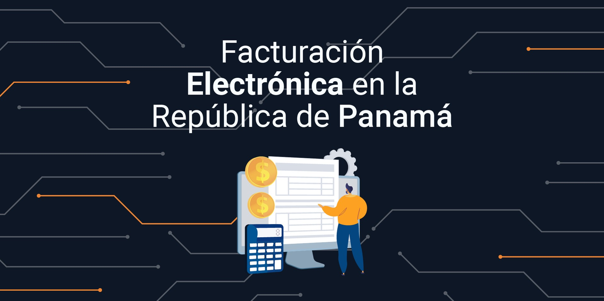
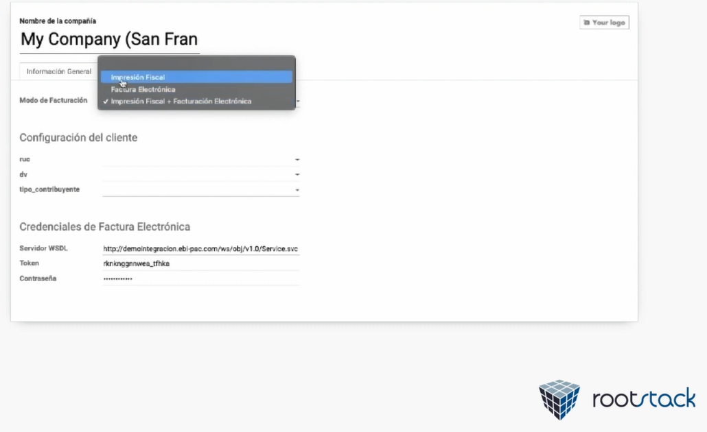
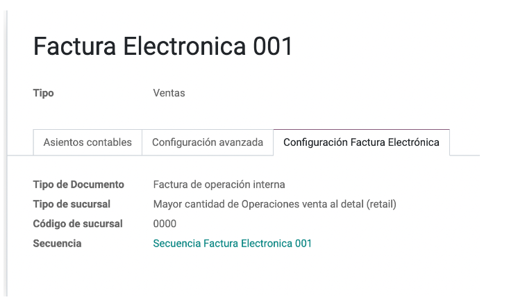
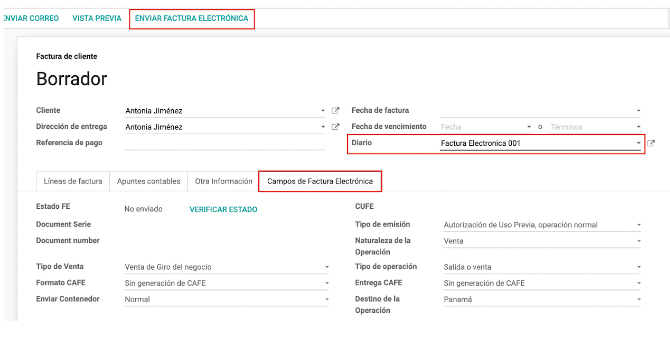
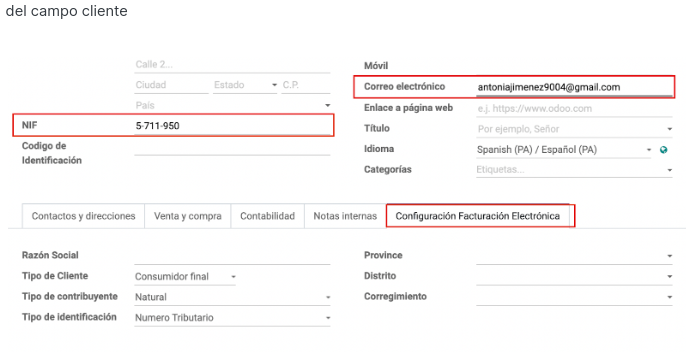
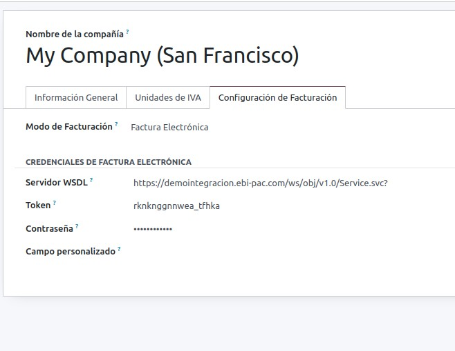
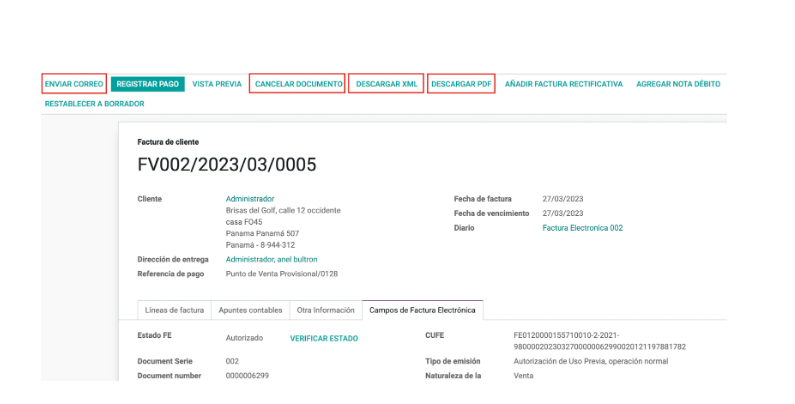
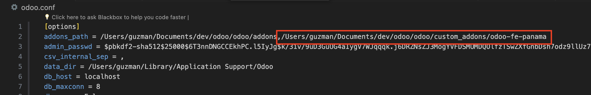
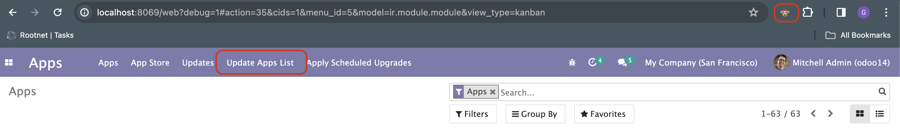
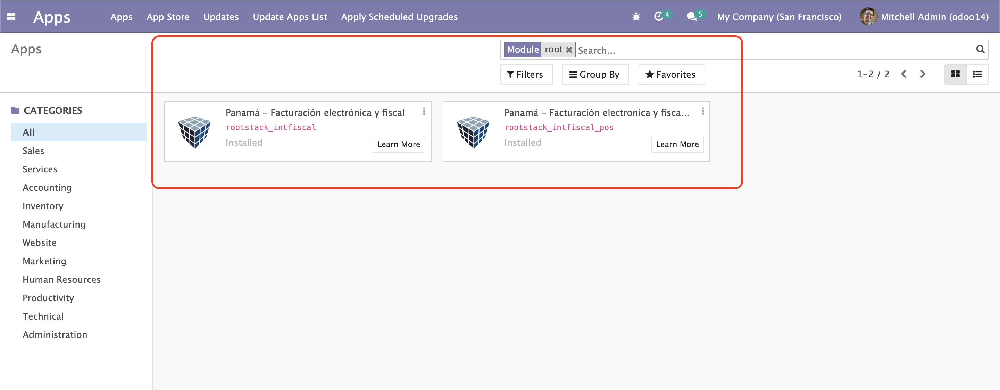

Ofrecemos tres modos de facturación: Impresión Fiscal, Facturación Electrónica o ambas.
Administrar los tipo de documentos electrónicos que desees generar por cada diario contable.
Creación y administración de Notas de Crédito y Débito.
Administre y verifique la información fiscal de sus clientes ante la Dirección General de Ingresos (DGI) de forma automática.
Envía la representación del comprobante en formato PDF y XML por correo electrónico de forma automática.


Al instalar el módulo automaticamente los diarios contables para facturación electrónica, nota de crédito y nota de débito se instalaran para poder usar el módulo de forma inmediata
Para configurar los diferentes tipos de documentos electrónicos a emitir tendrá que crear un diario contable por cada tipo de documento, dirigirse a Contabilidad -> Configuración -> Diarios Contables, abrir un diario existente o clic para crear, dirigirse a la pestaña Configuración Facturación Electrónica
Para emitir una factura electrónica dirigirse a Contabilidad -> Clientes -> Facturas, abrir una factura existente o crear una nueva, es muy importante que en el campo diario se seleccione un diario contable configurado para soportar algún tipo de documento electrónico
Completar los datos de la factura de manera habitual, dependiendo de la configuración del diario contable el sistema detecta si se trata de un comprobante electrónico, de ser el caso, habilitará la sección de Campos de Factura Electrónica, en esta sección revisamos el estado del comprobante electrónico y también podemos configurar algunos campos necesarios para emitir comprobantes electrónicos, para emitir el comprobante hacemos clic en el botón FACTURA ELECTRÓNICA.


Para emitir comprobantes electrónicos necesitamos ciertos ajustes en el perfil de los clientes, nos dirigimos a Contabilidad -> Clientes -> Clientes abrimos uno existente o creamos uno nuevo, también podemos acceder al formulario del cliente desde la misma interfaz de la factura a través del campo cliente
Para configurar facturación electrónica en la compañía, nos dirigimos a Ajustes -> Compañía -> Configuración de facturación, elegimos facturación electrónica y proporcionamos demá información.


Enviar Correo: Envío de correo electrónico de confirmación de la emisión del comprobante electrónico, con archivo XML y la repsentación en PDF adjuntos.
Cancelar Documento: Posibilidad de anular el comprobante emitido dentro de los 7 días posteriores a su emisión sin tener que crear una nota de crédito.
Descargar XML: Descarga el archivo XML generado a partir del comprobante emitido
Descargar PDF: Descargar la representación impresa del comprobante emitido en formato PDF
Sube los archivos del módulo personalizado al servidor utilizando herramientas como SCP o FileZilla. En nuestro caso subiremos la carpeta odoo-fe-panama a nuestro servidor.
scp -i /ruta/local/archivo.pem /ruta/local/odoo-fe-panama usuario@direccion_del_servidor:/ruta/odoo/custom_addons
El archivo principal de configuración de Odoo es típicamente llamado odoo.conf. Este archivo contiene la configuración del servidor Odoo, aquí agregamos la ruta del nuevo modulo al parametro addons_path. En nuestro caso agreamos la ruta a la carpeta odoo-fe-panama y reiniciamos el servicio de odoo sudo systemctl restart odoo
.
Nota: Luego de realizar este paso los módulos nuevos ya aparecerán en "Apps" luego de actualizar la lista de aplicaciones (Indicaciones de abajo).

Antes de instalar los módulos instala librerías de python utilizando pip en el entorno virtual de odoo.
# Crear entorno virtual
python3 -m venv /ruta/a/odoo/venv
# Activar entorno virtual
source /ruta/a/odoo/venv/bin/activate
# Instalar librerias de python (proporcionadas por Rootstack)
pip install git+https://gitlab.com/rootstack/impresora-fiscal/intfiscal-python-library
# Desactivar entorno virtual
deactivate
Actualiza lista de aplicaciones, Puedes utilizar la extensión de navegador Odoo Debug para facilitar este proceso. Ve a la vista de aplicaciones y haz clic en el botón de "Actualizar Apps" proporcionado por la extensión.

Buscar nuevos módulos e instalar
